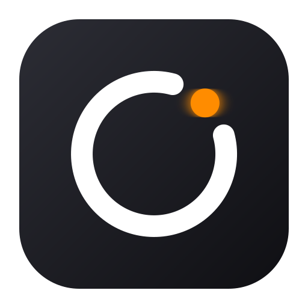

OcularNode
Web Viewer
-- 選擇已配對鏡頭 --
➕ 配對鏡頭
LIVE
未連線
🔒 E2EE
🖼️
⛶
-- FPS | -- kbps
等待連線...
📷
尚未連接鏡頭
點擊右上角「➕ 配對鏡頭」，或直接掃描 Android 鏡頭端的配對 QR Code 即可連線。
⚡ 開始連線
📸 截圖保存
🔄 重新連線
⏹ 斷開
數位變焦:
1.0x
➕ 配對 / 新增相機
✕
鍵盤輸入 / 貼上
📷 筆電鏡頭掃描
一鍵貼上配對字串 / 網址 (Quick Paste)
自動解析填入 ➔
鏡頭名稱 (Name)
設備 ID (Device ID / UUID)
E2EE 加密金鑰 (Device Secret)
區網 IP (選填)
Port
請將筆電/手機鏡頭對準 Android 舊手機螢幕上的配對 QR Code
取消
儲存並連線